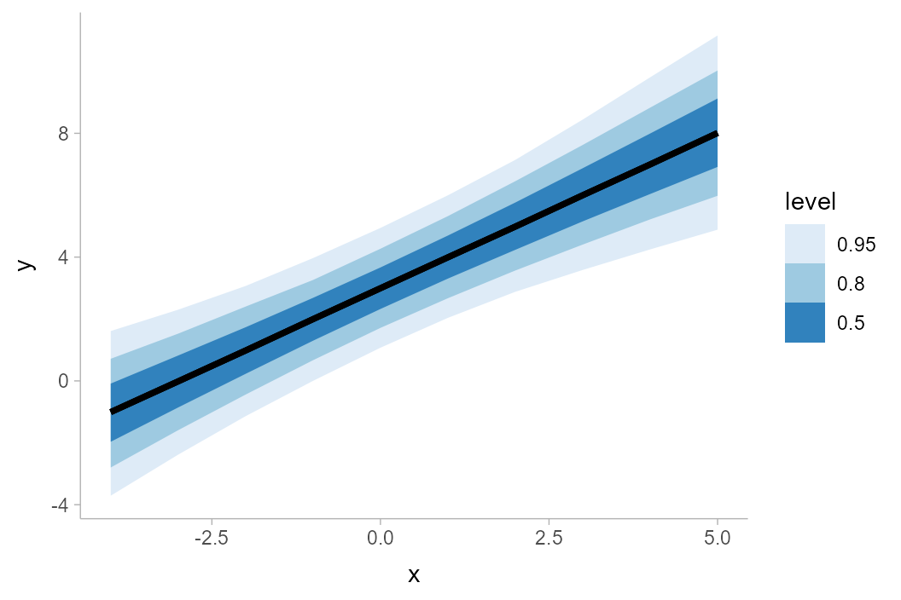
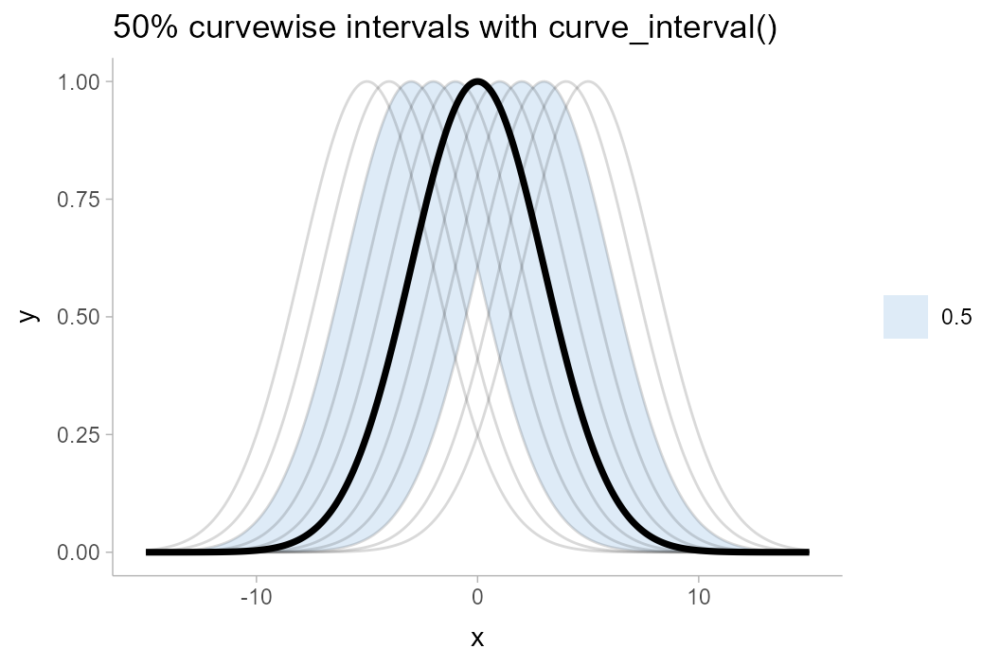

Introduction
The following vignette describes the geom_lineribbon() family of stats and geoms in ggdist, a family of stats and geoms for creating line+ribbon plots: for example, plots with a fit line and one or more uncertainty bands. This vignette also describes the curve_interval() function for calculating curvewise (joint) intervals for lineribbon plots.
The lineribbon family
The lineribbon family follows the same naming scheme as the larger family of slabinterval geoms (see vignette("slabinterval")). It has three members: geom_lineribbon(), stat_lineribbon(), and stat_dist_lineribbon().
-
geom_lineribbon()is meant to be used on data already summarized into points and intervals. -
stat_lineribbon()is meant to be used on sample data; e.g. draws from a posterior distribution of lines/curves, a bootstrap sampling distribution of lines/curves, an ensemble distribution, or any other distribution, really. This stat computes relevant summaries (points and intervals) before forwarding the summaries togeom_lineribbon(). -
stat_dist_lineribbon()can be used to create lineribbon geoms for analytical distributions. It takes either distributional objects or distribution names (thedistaesthetic) and arguments (theargsaesthetic orarg1, …arg9aesthetics) and compute the relevant slabs and intervals.
All lineribbon geoms can be plotted horizontally or vertically. Depending on how aesthetics are mapped, they will attempt to automatically determine the orientation; if this does not produce the correct result, the orientation can be overridden by setting orientation = "horizontal" or orientation = "vertical".
Lineribbons on already-summarized data
The base lineribbon geometry can only be applied to already-summarized data: data frames where each row contains a point and the upper and lower bounds of an interval. For the purposes of this example, we will first look at how to generate such a data frame from a data frame of sample data; such data could include Bayesian posterior distributions (for examples of this usage, see vignettes in tidybayes) or bootstrap sampling distributions. For the simple example here, we’ll just generate a distribution of lines manually:
set.seed(1234) n = 5000 df = tibble( .draw = 1:n, intercept = rnorm(n, 3, 1), slope = rnorm(n, 1, 0.25), x = list(-4:5), y = map2(intercept, slope, ~ .x + .y * -4:5) ) %>% unnest(c(x, y))
df is a 50,000-row data frame with a sample of 5000 y values for each x value. It represents a sample of 5000 lines. Here is a subsample of 100 of the lines:
df %>% filter(.draw %in% 1:100) %>% ggplot(aes(x = x, y = y, group = .draw)) + geom_line(alpha = 0.25)

We can summarize the data frame at each x position using median_qi() (or any other function in the point_interval() family):
## # A tibble: 10 x 7
## x y .lower .upper .width .point .interval
## <int> <dbl> <dbl> <dbl> <dbl> <chr> <chr>
## 1 -4 -1.01 -3.71 1.61 0.95 median qi
## 2 -3 -0.0149 -2.38 2.30 0.95 median qi
## 3 -2 0.981 -1.14 3.07 0.95 median qi
## 4 -1 2.00 0.000809 3.97 0.95 median qi
## 5 0 2.99 1.07 4.94 0.95 median qi
## 6 1 3.99 2.04 6.00 0.95 median qi
## 7 2 4.99 2.88 7.14 0.95 median qi
## 8 3 6.00 3.58 8.44 0.95 median qi
## 9 4 7.00 4.25 9.81 0.95 median qi
## 10 5 8.01 4.89 11.2 0.95 median qiGiven data summarized like that above, we can then construct a line+ribbon chart using geom_lineribbon():
df %>% group_by(x) %>% median_qi(y) %>% ggplot(aes(x = x, y = y, ymin = .lower, ymax = .upper)) + geom_lineribbon()

geom_lineribbon() automatically pulls in the .width column and maps it onto the fill aesthetic so that intervals of different widths get different colors. However, the result with just one interval is not great, as the default color scheme is quite dark with just one color. Let’s make two changes to improve the chart:
- We will use the
.widthargument ofmedian_qi()to generate multiple uncertainty bands (a 50%, 80%, and 95% band). - We will use
scale_fill_brewer()to get a nicer color scheme.
The result looks like this:
df %>% group_by(x) %>% median_qi(y, .width = c(.50, .80, .95)) %>% ggplot(aes(x = x, y = y, ymin = .lower, ymax = .upper)) + geom_lineribbon() + scale_fill_brewer()

Lineribbons on sample data
To apply lineribbons to sample data, we can also use stat_lineribbon() instead of summarizing the data first using median_qi() or point_interval(). This function does the summarization internally for you.
Taking the previous example, we can simply removing the lines that summarize the data first, and omit the aesthetic mappings onto ymin and ymax, which are automatically set by stat_lineribbon(). This simplifies the previous example considerably:
df %>% ggplot(aes(x = x, y = y)) + stat_lineribbon() + scale_fill_brewer()

The default .width setting of stat_lineribbon() is c(.50, .80, .95), as can be seen in the results above. We can change this as well; for example:
df %>% ggplot(aes(x = x, y = y)) + stat_lineribbon(.width = c(.66, .95)) + scale_fill_brewer()

Lineribbons on analytical distributions
Lineribbons can also be applied to analytical distributions. This use case often arises with confidence distributions describing uncertainty in a fit line; for an example, see the end of vignette("freq-uncertainty-vis"). Here, we will look at a simpler example where we construct the distributions manually; here we’ll assume some variable y that is normally distributed conditional on x with mean y_mean and standard deviation y_sd:
## # A tibble: 10 x 3
## x y_mean y_sd
## <int> <dbl> <dbl>
## 1 -4 -1 1.61
## 2 -3 0 1.38
## 3 -2 1 1.18
## 4 -1 2 1.05
## 5 0 3 1
## 6 1 4 1.05
## 7 2 5 1.18
## 8 3 6 1.38
## 9 4 7 1.61
## 10 5 8 1.87We can visualize this conditional distribution with stat_dist_lineribbon() using distributional::dist_normal():
analytical_df %>% ggplot(aes(x = x, dist = dist_normal(y_mean, y_sd))) + stat_dist_lineribbon() + scale_fill_brewer()

More examples
For more examples of lineribbons, including multiple lineribbons in the same plot, see the examples at the end of vignette("freq-uncertainty-vis").
Curve boxplots (aka lineribbons with joint intervals or curvewise intervals)
The above examples all calculate conditional intervals, either using point_interval() (directly or indirectly) or using quantiles of an analytical distribution. However, you may not always want conditional intervals.
Where point_interval() calculates pointwise intervals, or intervals conditional on each group, curve_interval() calculates joint or curvewise intervals. In the literature these are also called curve boxplots (Mirzargar et al. 2014, Juul et al. 2020).
An example will help illustrate the difference between the two types of intervals. Consider the following set of curves, where each curve is assumed to be a “draw” from some distribution of curves, \(\mathbf{y} = f(\mathbf{x})\), where \(\mathbf{x}\) and \(\mathbf{y}\) are vectors:
k = 11 # number of curves n = 501 df = tibble( .draw = 1:k, mean = seq(-5,5, length.out = k), x = list(seq(-15,15,length.out = n)), ) %>% unnest(x) %>% mutate(y = dnorm(x, mean, 3)/max(dnorm(x, mean, 3))) df %>% ggplot(aes(x = x, y = y)) + geom_line(aes(group = .draw), alpha=0.2)

If one used one of the point_interval() functions to summarize this curve (such as median_qi(), mean_qi(), etc), it would calculate pointwise intervals:
df %>% group_by(x) %>% median_qi(y, .width = .5) %>% ggplot(aes(x = x, y = y)) + geom_lineribbon(aes(ymin = .lower, ymax = .upper)) + geom_line(aes(group = .draw), alpha=0.15, data = df) + scale_fill_brewer() + ggtitle("50% pointwise intervals with point_interval()")

The 50% pointwise interval calculated at (say) \(x = 1\) would contain 50% of the draws from \(y|x=1\). At a different value of \(x\), say \(x = 2\), the 50% pointwise interval would also contain 50% of the draws from \(y|x = 2\). However, the specific draws contained in the interval for \(y|x=2\) might be different draws from those contained in the interval for \(x|y=1\): if you trace any of the underlying curves, you will notice that each curve is included in some intervals and not included in others. Thus, the set of intervals—the ribbon—may not fully contain 50% of curves. Indeed, inspecting the above plot, the 50% ribbon contains none of the curves!
Depending on what type of inference we care about, this might be sufficient for our purposes: maybe we are interested just in what the outcome is likely to be at a given x value (a conditional inference), but we are not interested in joint inferences (e.g., what is the shape of the curve likely to look like?). However, if we are interested in such joint inferences, pointwise intervals can be misleading. The shape of the median curve, for example, looks nothing like any of the possible outcomes. The interval also does not include the maximum value of any of the underlying curves, which might cause us to conclude (incorrectly) that a value close to 1 is unlikely, when the exact opposite is the case (every curve touches 1).
One solution I like for such situations is to show spaghetti plots: just plot the underlying curves. This is a so-called frequency framing uncertainty visualization, and it tends to work fairly well. However, in some cases you may want a visual summary using intervals, in which case curvewise intervals could help. Using curve_interval() instead of point_interval() or median_qi() calculates these:
df %>% group_by(x) %>% curve_interval(y, .width = .5) %>% ggplot(aes(x = x, y = y)) + geom_lineribbon(aes(ymin = .lower, ymax = .upper)) + geom_line(aes(group = .draw), alpha=0.15, data = df) + scale_fill_brewer() + ggtitle("50% curvewise intervals with curve_interval()")

Note how the 50% curvewise interval now contains half of the underlying curves, and the median curve is one of the underlying curves (so it is more representative of the curve shape we should expect). These intervals also cover the peaks of the curves, where the pointwise intervals did not.
An X% curvewise interval is calculated across all the curves by taking the top X% closest curves to the central curve, for some definition of “close” and “central”. The curve_interval() function currently orders curves by mean halfspace depth, which is basically how close each curve is to the pointwise median in percentiles, on average.
Given the above, let’s see what more realistic curvewise intervals of the above example might look like by using a larger number of draws:
k = 1000 # number of curves large_df = tibble( .draw = 1:k, mean = seq(-5,5, length.out = k), x = list(seq(-15,15,length.out = n)), ) %>% unnest(x) %>% mutate(y = dnorm(x, mean, 3)/max(dnorm(x, mean, 3))) pointwise_plot = large_df %>% group_by(x) %>% median_qi(y, .width = c(.5, .8, .95)) %>% ggplot(aes(x = x, y = y)) + geom_hline(yintercept = 1, color = "gray75", linetype = "dashed") + geom_lineribbon(aes(ymin = .lower, ymax = .upper)) + scale_fill_brewer() + ggtitle("point_interval()") curvewise_plot = large_df %>% group_by(x) %>% curve_interval(y, .width = c(.5, .8, .95)) %>% ggplot(aes(x = x, y = y)) + geom_hline(yintercept = 1, color = "gray75", linetype = "dashed") + geom_lineribbon(aes(ymin = .lower, ymax = .upper)) + scale_fill_brewer() + ggtitle("curve_interval()") plot_grid(nrow = 2, pointwise_plot, curvewise_plot )

Notice how the pointwise intervals miss out on the peaks of this distribution of curves. Even the 95% ribbon, which appears to reach up to the peaks, in fact falls slightly short. While this is a bit of a pathological example, it does demonstrate the potential shortcomings of pointwise intervals.
Limitations of curvewise intervals
One challenge with curvewise intervals is that they can tend to be very conservative, especially at moderate-to-large intervals widths. Let’s bootstrap some LOESS fits to horsepower versus MPG in the mtcars dataset:
set.seed(1234) n = 4000 mpg = seq(min(mtcars$mpg), max(mtcars$mpg), length.out = 100) mtcars_boot = tibble( .draw = 1:n, m = map(.draw, ~ loess( hp ~ mpg, span = 0.9, # this lets us predict outside the range of the data control = loess.control(surface = "direct"), data = slice_sample(mtcars, prop = 1, replace = TRUE) )), hp = map(m, predict, newdata = tibble(mpg)), mpg = list(mpg) ) %>% select(-m) %>% unnest(c(hp, mpg))
This is a pretty naive approach, and definitely not a great way of analyzing this data, but it will illustrate the problems of some kinds of problems we might get with joint intervals. Let’s look at a spaghetti plot of just 400 draws from this bootstrap distribution first:
mtcars_boot %>% filter(.draw < 400) %>% ggplot(aes(x = mpg, y = hp)) + geom_line(aes(group = .draw), alpha = 1/10) + geom_point(data = mtcars) + coord_cartesian(ylim = c(0, 400))

Now, pointwise intervals:
mtcars_boot %>% ggplot(aes(x = mpg, y = hp)) + stat_lineribbon(.width = c(.5, .7, .9)) + geom_point(data = mtcars) + scale_fill_brewer() + coord_cartesian(ylim = c(0, 400))

Finally, curvewise intervals:
mtcars_boot %>% group_by(mpg) %>% curve_interval(hp, .width = c(.5, .7, .9)) %>% ggplot(aes(x = mpg, y = hp)) + geom_lineribbon(aes(ymin = .lower, ymax = .upper)) + geom_point(data = mtcars) + scale_fill_brewer() + coord_cartesian(ylim = c(0, 400))

Notice how noisy the curvewise intervals are. In addition, because a number of curves tend to start low and end high (or vice versa), above 50%, the bands rapidly expand to cover almost all of the curves in the sample, regardless of coverage level. You can try different methods to sometimes get improved bands; e.g. using the "bd-mbd" method per Sun and Genton (2011) works better on this dataset:
mtcars_boot %>% group_by(mpg) %>% curve_interval(hp, .width = c(.5, .7, .9), .interval = "bd-mbd") %>% ggplot(aes(x = mpg, y = hp)) + geom_lineribbon(aes(ymin = .lower, ymax = .upper)) + geom_point(data = mtcars) + scale_fill_brewer() + coord_cartesian(ylim = c(0, 400))

In general I have found that there is no one method that consistently works well on all datasets. No matter the method, intervals often become problematic above 50%, hence the default .width for curve_interval() is 0.5 (unlike the default for point_interval(), which is 0.95). In any case, caution when using these intervals is advised.